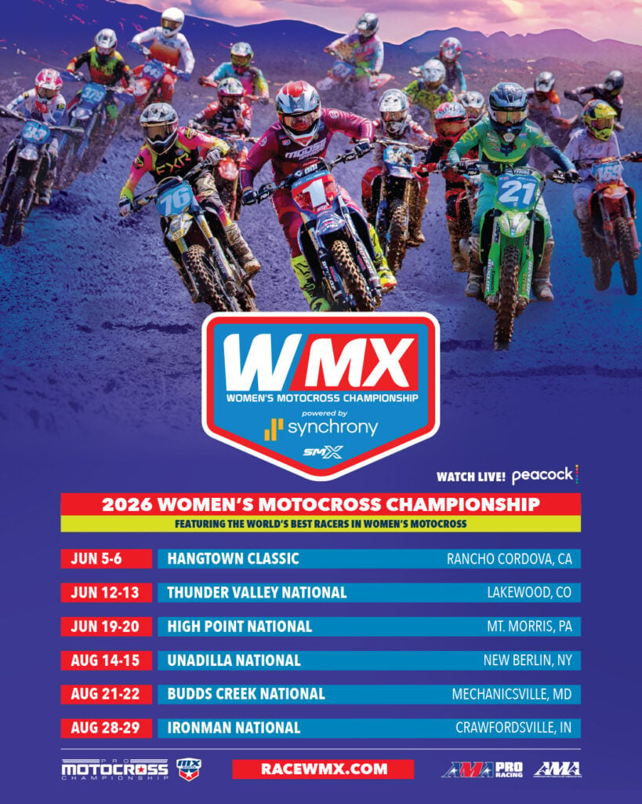
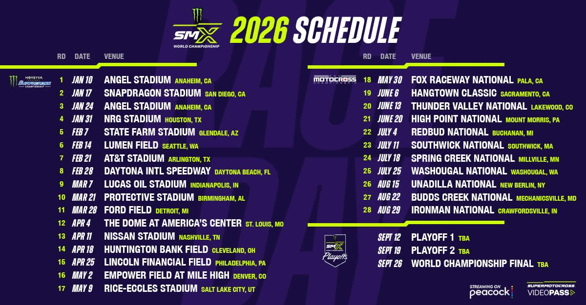

GET ALL YOUR SUPERMOTOCROSS NEWS HERE!
PLUS NEW AND UPCOMING BRAND DEALS, FROM BRANDS LIKE THOR, FOX, ALPINESTARS AND MORE!

The first race for the Women's SuperMotocross is Friday, June 5th, in Hangtown, California!
Earlier this week, Aaron Plessinger, the lucky number 7, had a bad crash in Detroit, and now he’s said that he’ll be out the rest of the Supercross Season. Hopefully he’ll be ready to race in time for Motocross. Ken Roczen took home first place in Detroit, while Chase Sexton took the second place finish. And finally, Malcolm Stweart came in third, his first time on the podium in a while. For the Overall points, we have Eli Tomac first in points, with 245, Hunter Lawrence tied with Tomac, and Ken Roczen third with 240 points. Ken Roczen is only five points away from Tomac and Lawrence. After Roczen is Cooper Webb, fourth in points with 220.
